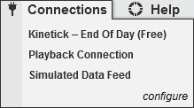
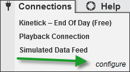
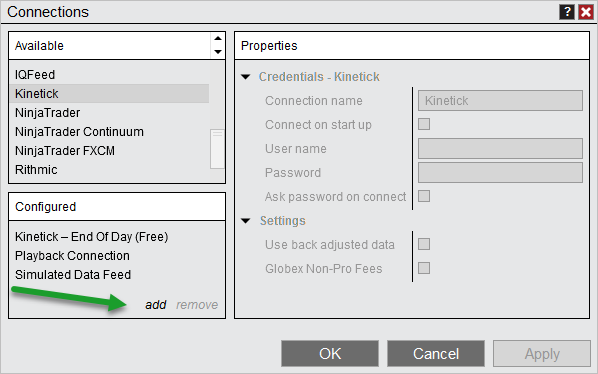
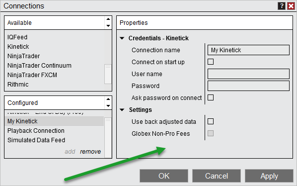

|
<< Click to Display Table of Contents >> Connecting to your Account |


|
Connecting to your Account
|
<< Click to Display Table of Contents >> Connecting to your Account |
|
 Understanding account connections
Understanding account connections
Account ConnectionsWithin the NinjaTrader Control Center window, select the Connections menu, all defined connections will be displayed in this menu. A connection is where you set up your user name, password and any relevant information that allows you to establish a connection to your broker and/or data feed service. Selecting the connection will cause you to connect to it.
 |
 How to create an account connection
How to create an account connection
Creating an Account ConnectionWithin the Connections menu you can add a connection, change a connection or remove a connection. The following steps use Kinetick as the connectivity provider. This provider is used for demonstration purposes. You can access broker/technology specific connection help information via the NinjaTrader Connection Guide.
To create an account connection:
1. Open the Connections window by going to the Connections menu within the Control Center and selecting "configure"

2. Select the connection provider you want to create a connection for in the Available section and select "add".

3. After selecting "add" you will be prompted to supply the following information:
•User defined connection name (Only use alphanumeric characters in the connection name) •Optionally select "Connect on start up" to automatically connect to this connection when NinjaTrader is started.
•Various Settings which are specific to your connection. Please see the NinjaTrader Connection Guide for more information.

4. Press the "OK" button to finish configuring the connection. Now in the NinjaTrader Control Center connections menu you will be able to select the newly created connection by its connection name to connect. |